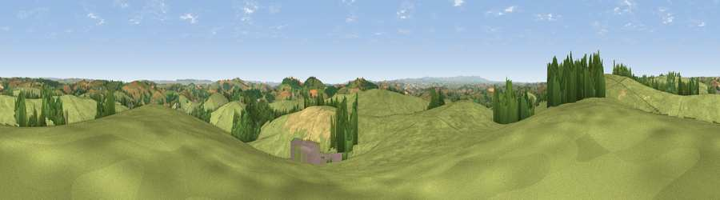

Viewpoint near Way Village
#11742 in England · top 12% of its area beats it · near Way VillageWhere it is
The exact computed spot (SS 89775 08875). Click the marker for map links.
The view, rendered

A 360° render of this exact spot computed from the terrain model, tree cover and land cover — summer colours, afternoon light, calibrated against photographs of famous viewpoints. Real trees, hedges and buildings will differ in detail.
The panorama
Grey silhouette: terrain skyline in each direction (720 bearings, Earth curvature and refraction included). Dashed green: skyline with trees (+15 m) and buildings (+8 m) as obstacles. Blue strip: how far the ground is visible on each bearing.
Where the view opens
Wedge length = distance to the farthest visible ground on that bearing (vegetation-aware). Rings at 10, 25 and 50 km.
What fills the view
80% grassland · 11% woodland · 9% cropland
Angular shares of the visible panorama (visual magnitude), not map area. Landscape diversity 0.28 (0–1 Shannon).
Key numbers
More beautiful places nearby
The staircase of upgrades: each row has a higher view potential than everything closer. Driving times are estimates from straight-line distance, calibrated against real road routing — check an actual route before setting out.
| Place | Direction | Drive | Score |
|---|---|---|---|
| Viewpoint near Way Village | WNW · 1 km | ~2 min | 62.2 |
| Viewpoint near Stockleigh Pomeroy | S · 3 km | ~8 min | 69.7 |
| Cadbury Castle | SSE · 4 km | ~9 min | 73.7 |
| Fursdon Hill | SE · 5 km | ~10 min | 76.2 |
| Viewpoint near Stockleigh Pomeroy | S · 6 km | ~12 min | 78.9 |
| Viewpoint near Whitestone | SSW · 15 km | ~26 min | 79.8 |
| Viewpoint near Kenn | S · 25 km | ~41 min | 80.0 |
| Viewpoint near Tipton St John | SE · 28 km | ~44 min | 81.5 |
50.86884, -3.56779 · source: screening · position refined by local search. Computed location — check access rights before visiting.